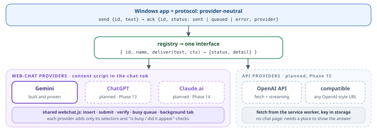
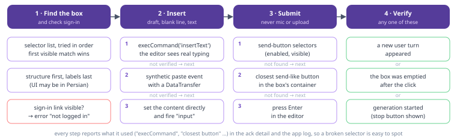

از روز اول معلوم بود Gemini آخرین مقصد نیست: ChatGPT و Claude و APIها هم در نقشهی راه بودند. تصمیم معماری این بود که اپ و پروتکل هیچ چیزی دربارهی مقصد ندانند و انتخاب مقصد فقط داخل افزونه انجام شود.

deliver(text, ctx) که یک ack برمیگرداند. رجیستری نگاشت
شناسه به provider است و provider فعال در صفحهی تنظیمات انتخاب میشود.webchat.js نوشته شده؛ هر provider فقط
selectorهای خودش و دو بررسی «مشغول است؟» و «ظاهر شد؟» را میدهد.fetch میفرستد و کلید را در
حافظهی افزونه نگه میدارد. چون صفحهی چتی نیست، باید جایی برای نمایش جواب داشته باشد؛ طرح فعلی یک پیام اختیاری
تازه به اسم answer است، که طبق قانونهای تکامل پروتکل چیزی را نمیشکند.هر چیزی که با تغییر مقصد عوض میشود (صفحه، selectorها، نحوهی ارسال، تشخیص مشغول بودن) داخل افزونه است؛ هر چیزی که ثابت میماند (گرفتن متن، ticket، امنیت، نشانگر) داخل اپ است. این همان اصل باز-بسته (Open/Closed) است: اضافه کردن ChatGPT یعنی یک پوشهی تازه و یک خط در رجیستری، بدون تغییر اپ یا پروتکل.
جعبهی ورودی Gemini یک textarea ساده نیست؛ یک ویرایشگر غنی (Quill) است که فقط به رویدادهای واقعی ورودی
واکنش نشان میدهد. اگر متن را مستقیم در DOM بگذاریم، ممکن است روی صفحه دیده شود ولی ویرایشگر از آن خبر نداشته
باشد و دکمهی ارسال فعال نشود. برای همین هر قدم یک زنجیرهی جایگزین دارد و نتیجهی هر روش بررسی میشود.

اگر کاربر خودش چیزی در جعبه نوشته باشد، پاک نمیشود: پیام نهایی «پیشنویس، یک خط خالی، متن» است، و پیشنویس اول میآید.
وقتی Google صفحه را عوض کند، فقط selectors.js اصلاح میشود. دکمهی Test در تنظیمات نشان میدهد کدام selector پیدا شد.
۱۳ تست روی یک صفحهی جعلی شبیه Gemini (tests/extension/fake-chat.html) در مرورگر واقعی: هر سه روش گذاشتن متن،
دکمهی نزدیکترین وقتی selector نمیخورد، حفظ پیشنویس، صف. روی Gemini واقعی: ارسال در ۹۲ تا ۱۱۳ میلیثانیه داخل صفحه، و
selectorها روی صفحهی زنده بررسی شدند.
The app and the protocol are provider-neutral; the extension owns a registry of providers behind one small interface — id, name and deliver returning an ack. Web-chat providers share one module for inserting, submitting, verifying and queueing, and only supply their selectors and two checks. Inserting into a rich editor is fragile, so every step is a fallback chain — execCommand, then a synthetic paste, then a direct set — and each attempt is verified. Adding ChatGPT means a new folder and one registry line, with no change to the app.